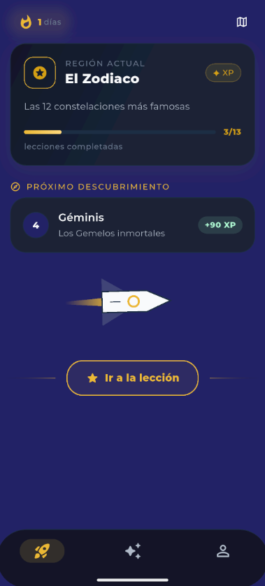
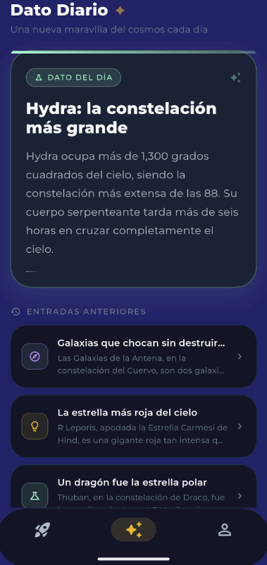
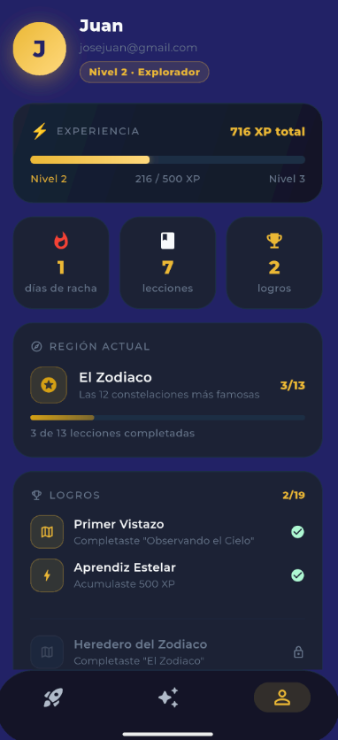

Una app para aprender las constelaciones explorando el cielo por regiones, con lecciones cortas, rachas diarias y recompensas, pensada para que aprender astronomía se sienta como un juego.
Astraea organiza el cielo nocturno en regiones temáticas, como "El Zodiaco", y convierte cada constelación en una lección corta con su propia recompensa de experiencia. Se avanza descubriendo, no memorizando.
Una racha diaria y un dato curioso nuevo cada día mantienen el hábito de volver; un sistema de niveles y logros le da seguimiento visual al progreso del usuario a lo largo del tiempo.
El mapa estelar se explora por regiones temáticas, cada una con su propio set de constelaciones y lecciones.
Cada constelación se desbloquea completando una lección corta, con XP como recompensa inmediata.
Un contador de días consecutivos anima a volver cada día, el mismo mecanismo que hace efectivos a los apps de hábitos.
Una curiosidad astronómica distinta cada día, con historial de entradas anteriores para repasar.
El progreso se traduce en niveles con nombre propio, de "Explorador" en adelante, y una barra de XP visible.
Insignias por hitos concretos: primera lección completada, XP acumulado, región terminada.


